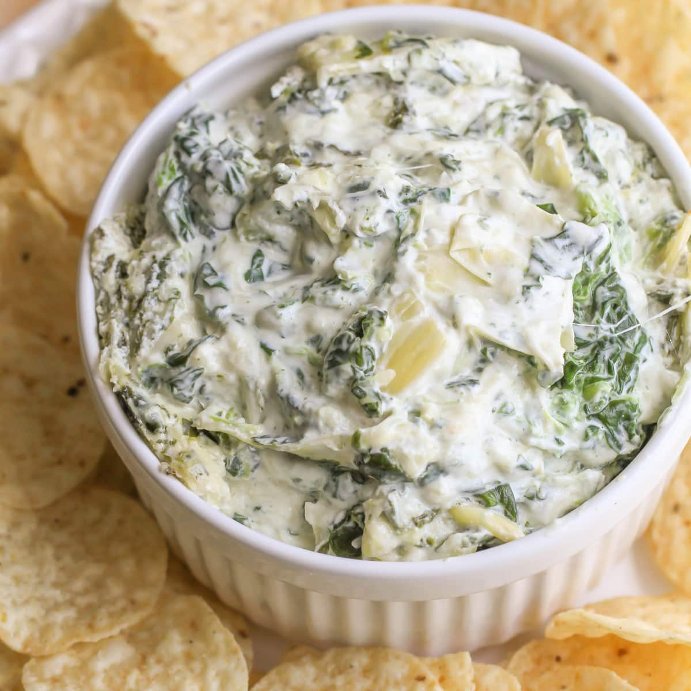

Artichoke Dip
This is the Looff family recipe for Artichoke Dip!
You'll need:
- 1 Large Jar of Marinated Artichokes
- 1 and a 1/2 Cup of Mayo (Bonus Points if you make it yourself)
- 1 and a 1/2 cup of Parmesan Cheese
- 1/4 Cup of Diced Onions
- Paprika to your Taste!
Intructions:
- Pull leaves off of the artichoke hearts, and use the hearts only (I know, morbid).
- Rinse and dice.
- Mix with the other ingredients and put in a casserole dish.
- Sprinkle that paprika in, then bake at 375 for 20 minutes. Serve with your vehicle of choice!
